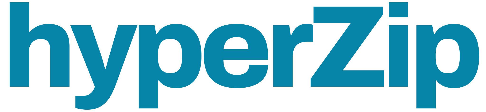
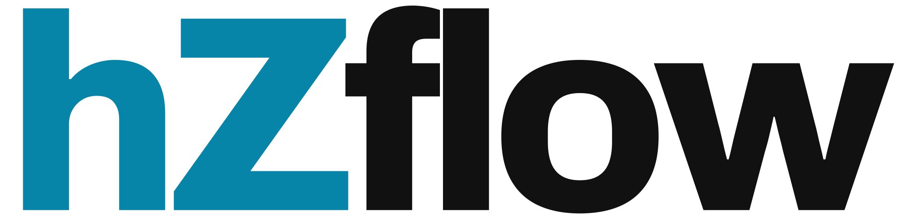
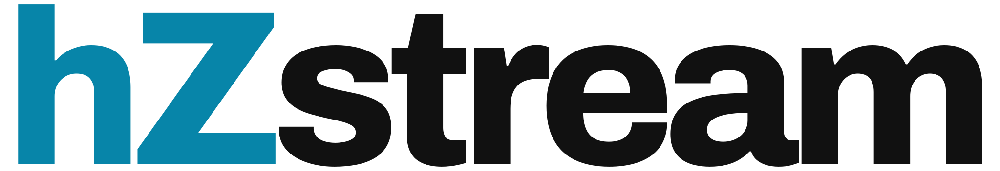
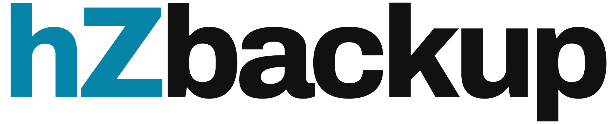

Ordmärken i fyra varianter. Blått hZ bär familjen,
efterledet står i svart; huvudmärket hyperZip är helblått. Alla delar
samma typsnittsstack, teckenavstånd och färgvariabler — ändra
--hz-blue en gång och allt följer med.




#0785a9
svart #111111
blå, mörkt läge #3ab5d8
<style>
:root {
--hz-blue: #0785a9;
--hz-black: #111111;
}
.hz-logo {
/* Arial saknar vikt 900 — en äkta tung skärning först, Arial sist. */
font-family: "Archivo Black", "Arial Black", "Helvetica Neue", Arial, sans-serif;
font-weight: 900;
font-size: clamp(34px, 7vw, 64px);
letter-spacing: -0.055em;
line-height: 1;
white-space: nowrap;
}
.hz-blue { color: var(--hz-blue); }
.hz-black { color: var(--hz-black); }
</style>
<div class="hz-logo hz-blue">hyperZip</div>
<div class="hz-logo"><span class="hz-blue">hZ</span><span class="hz-black">flow</span></div>
<div class="hz-logo"><span class="hz-blue">hZ</span><span class="hz-black">stream</span></div>
<div class="hz-logo"><span class="hz-blue">hZ</span><span class="hz-black">backup</span></div>